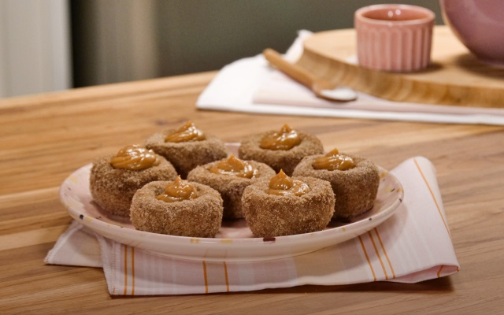

BOLINHA DE CHURROS

PREPARO
35 MIN
RENDIMENTO
8 PORÇÕES
FAVORTIOS
9.875
COMENTÁRIOS
325
TUDOGOSTOSO
Menbro desde 2005
INGREDIENTES
MASSA
200 ml de água
1 colher (sopa) de manteiga
4 Colheres (sopa) de açucar
1 colher (chá) de canela em pó
1 xícara de farinha de trigo
EMPANAMENTO
1 colher (sopa) de canela
1/2 xícara de açucar colher (chá) de canela em pó
RECHEIO
150 g de doçe de leite
Comprar Ingredientes